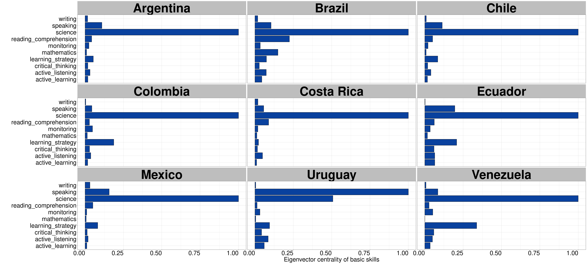
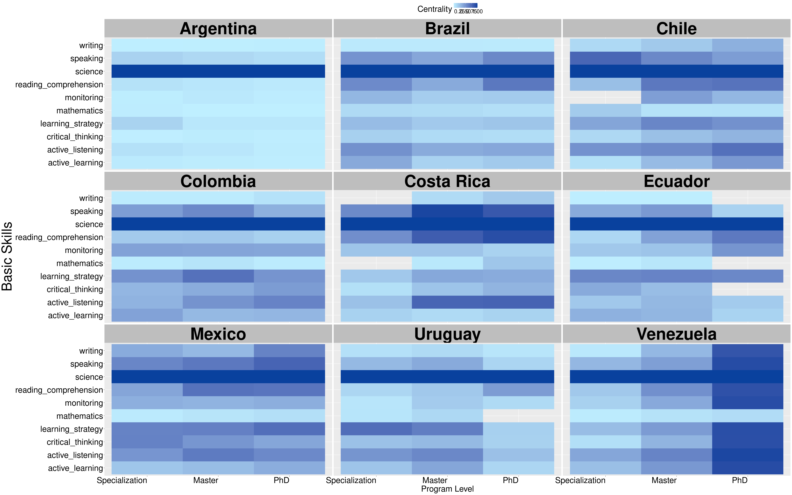

![]()
| Country | OECD.Member | Edges | Size | Density | Clustering |
|---|---|---|---|---|---|
| Argentina | FALSE | 1575 | 524 | 0.0114869 | 0.4151898 |
| Brazil | FALSE | 2243 | 932 | 0.0051677 | 0.3752704 |
| Chile | TRUE | 764 | 218 | 0.0322581 | 0.4952651 |
| Colombia | TRUE | 704 | 240 | 0.0245119 | 0.4350093 |
| CostaRica | TRUE | 511 | 130 | 0.0608229 | 0.6470876 |
| Ecuador | FALSE | 1405 | 741 | 0.0051209 | 0.4257895 |
| Mexico | TRUE | 2126 | 562 | 0.0134800 | 0.5720639 |
| Uruguay | FALSE | 383 | 157 | 0.0311939 | 0.4005043 |
| Venezuela | FALSE | 677 | 220 | 0.0280614 | 0.5425009 |
A Cross-National Comparison Case Study on the Basic Skills Academic Offering
Supplementary material
Abstract
This supplementary material aims to expand the data and methodological documentation of the work: “A Cross-National Comparison Case Study on the Basic Skills Academic Offering.” Emphasis is placed on how to use the associated GitHub repository for R users with expertise in network data science.
1 Raw Data and Pre-processing
Raw data are available as texts (PDF or docx files) in the folder of the corresponding sampled country. For example, sampled documents from Argentina are available in the folder “Argentina,” documents from Brazil are available in the folder “Brazil,” and so on. Texts pre-processing were handled with readtext and quanteda in a series of R scripts. These scripts are available in the folder “Pre-processing.”
2 Curated Data
As a convenient step in our analyses, we created the folder “Curated_Data” which provides curated data for each country. This curated data provides the estimated centrality for each basic skill in each country. Apart from these data, we also provide the NetworkData folder. This second folder contains the academic offering of each nation as a network data serialized in RDS format.
3 Network analyses
Pre-processing texts result in a series of features-document matrices which are available in the folder “Matrices.” We used these matrices as raw input for modeling the academic offering as a series of non-directed bipartite networks with the help of the igraph package.
3.1 Network properties set up
The network properties of each nation’s academic offering was done with the network package. The following network attributes are present for each academic offering: country of origin, membership to the Organization for Economic Development (OECD), network size, network density, network clustering (estimated by the reinforcement_tm algortihm available in the tnet package). Vertex attributes include the country of origin (for both node partitions), the length of the brochure (for nodes in the first partition), the degree centrality (for both node partitions), the eigenvector centrality (for both node partitions), the program level (for the first node partition), and the name of each skills (for nodes in the second partition). These vertex attributes enable us to exert statistical control when estimating the network effects in our series of exponential random graph models.
4 Regional Network Analysis
The following table summarizes the network statistics of the academic offering of graduate programs in Latin American sampled countries. In general terms, the academic offering is weakly connected to basic skills (network density ranges from 0.005 in Brazil and Ecuador to 0.061 in Costa Rica). The weak connectivity between programs and basic skills reveals that the academic offering from sampled universities in Latin America highlights other contents that have nothing to do with basic skills as developed capacities that facilitate learning and a faster acquisition of knowledge.
Despite the weak connectivity between programs and skills and to address the artifact discussed in section 3.5 of the article, we compare programs’ and skills’ centrality as a function of program levels in each country (see Figure F1).

The next Figure shows the estimated centrality for each basic skill in each country. Scientific reasoning (science) proved to be the first basic skill with the highest centrality (except for Uruguay where speaking ranked first followed by science).

Now, let’s examine basic skills’ centrality more closely.

As previous Figure shows, scientific reasoning (science) emerges as the principal basic skill in the academic offering. Nonetheless, other skills are important (e.g., speaking and learning strategy). By ranking the importance of these skills, we now have sufficient evidence to estimate their importance following the logic of exponential random graph model.